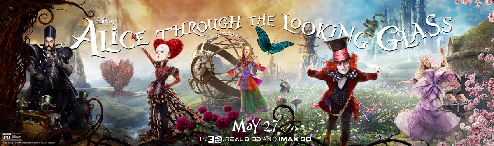

Alice Kingsleigh has spent the past three years following in her father's footsteps and sailing the high seas. Upon her return to London from China, Alice discovers that her ex-fiancé, Hamish Ascot, has remarried her look-alike and taken over her father's company and plans to have her sell him her father's ship, "the Wonder", in exchange for her family home. Unable to make a choice, Alice runs away, and comes across her butterfly friend Absolem, who disappears through a mysterious mirror in one of the upstairs rooms, returning to Wonderland.
There, Alice is greeted by Mirana of Marmoreal the White Queen, Nivens McTwisp the White Rabbit, the Tweedles, Mallymkun the Dormouse, Thackery Earwicket the March Hare, Bayard, and the Cheshire Cat. They inform her that Tarrant Hightopp the Mad Hatter is in poor health because his family is missing following the Attack of the Jabberwocky. The attack occurred shortly after his father, Zanik, a hat retailer, seemed to reject Tarrant's gift of a hat creation.
The White Queen persuades Alice to convince Time himself to save the Mad Hatter's family in the past, believing her to be the only one who can save the Hatter. However, she cautions Alice about Time, and that if her past self sees her future self, everything will be history. As Alice sets out, she ends up in a dreary castle, where Time himself, a demigod that is part-human, part-clock, resides. As Alice tries to consult Time, she finds the Chronosphere, an object that powers all time in Wonderland and will allow her to travel to any time in the past.
John Christopher Depp II
(born June 9, 1963)[1] is an American actor, producer, and musician. He has won the Golden Globe Award and Screen Actors Guild Award for Best Actor. He rose to prominence on the 1980s television series 21 Jump Street, becoming a teen idol. Depp has taken on the task of challenging himself to portray "larger-than-life" roles, starting with a supporting role in Oliver Stone's Vietnam War film Platoon in 1986, then playing the title character in the romantic dark fantasy Edward Scissorhands (1990). He later found box office success in the fantasy adventure film Sleepy Hollow (1999), the fantasy swashbuckler film Pirates of the Caribbean: The Curse of the Black Pearl (2003) and its sequels, the fantasy film Charlie and the Chocolate Factory (2005), the fantasy film Alice in Wonderland (2010) and voicing the title character in the animated action comedy western Rango (2011). He has collaborated on nine films with director, producer and friend Tim Burton. Depp is regarded as one of the world's biggest film stars.[2][3] He has gained worldwide critical acclaim for his portrayals of such people as screenwriter-director Ed Wood in Ed Wood, undercover FBI agent Joseph D. Pistone in Donnie Brasco, "gonzo" journalist Raoul Duke in Fear and Loathing in Las Vegas, cocaine kingpin George Jung in Blow, author J. M. Barrie in Finding Neverland, the Depression-era outlaw John Dillinger in Michael Mann's Public Enemies, and the Boston gangster Whitey Bulger in Black Mass. Films featuring Depp have grossed over $3.2 billion at the United States box office and over $8 billion worldwide.[4] His most commercially successful films are the Pirates of the Caribbean films, which have grossed $3 billion, Alice in Wonderland, which grossed $1 billion, Charlie and the Chocolate Factory, which grossed $474 million, and The Tourist, which grossed $278 million
Anne Jacqueline Hathaway
(born November 12, 1982) is an American actress and singer. Born in Brooklyn, New York and brought up in Millburn, New Jersey, Hathaway was inspired to act by her mother and as a high school student was nominated for the Paper Mill Playhouse Rising Star Award for Best Performance by a High School Actress for her performance in Once Upon a Mattress. She made her professional screen debut in the short-lived Fox television series Get Real (1999–2000), before landing the lead role of Mia Thermopolis in the Disney comedy film The Princess Diaries (2001), for which she won the Teen Choice Award for Choice Movie Actress – Comedy. Hathaway went on to become a widely praised "role model for children" for her roles in Nicholas Nickleby (2002), Ella Enchanted (2004), The Princess Diaries 2: Royal Engagement (2004), and Hoodwinked! (2005). Hathaway began to transition to more adult roles in 2005, winning a DVD Exclusive Award for Best Actress for Havoc (2005), receiving a Screen Actors Guild Award nomination for her role in the critically acclaimed Brokeback Mountain (2005), garnering further recognition for appearing alongside Meryl Streep in The Devil Wears Prada (2006), and earning a BIFA nomination for Best Performance by an Actress for her portrayal of Jane Austen in Becoming Jane (2007). Hathaway received praise for her performance as a recovering drug addict in Rachel Getting Married (2008), for which she won the Critics' Choice Movie Award for Best Actress and was nominated for the Academy, Golden Globe, Screen Actors Guild, and Indie Spirit Awards for Best Actress / Female Lead. She went on to win her second Teen Choice Award for Choice Movie Actress – Comedy for starring in Bride Wars (2009) and in 2010, appeared in the box office hits Valentine's Day, Alice in Wonderland and Love & Other Drugs, which earned her the Satellite Award for Best Actress and a nomination for the Golden Globe Award for Best Actress – Motion Picture Comedy or Musical. In 2011, Hathaway voiced Jewel in the animated film Rio and hosted the 83rd Academy Awards with James Franco, which was nominated for a Primetime Emmy Award for Outstanding Special Class Program. In 2012, she portrayed Catwoman in Christopher Nolan's The Dark Knight Rises, for which she won the Saturn Award for Best Supporting Actress. The same year, she starred as Fantine in Tom Hooper's Les Misérables, which earned her widespread acclaim and she won the Academy, Golden Globe, BAFTA, and SAG Awards for Best Supporting Actress. Hathaway has since gone on to appear in Rio 2 (2014), Interstellar (2014), The Intern (2015), and reprised her role as the White Queen in Alice Through the Looking Glass (2016).
Mia Wasikowska
born October 1989)[2] is an Australian actress. She made her screen debut on the Australian television drama All Saints in 2004, followed by her feature film debut in Suburban Mayhem (2006). She first became known to a wider audience following her critically acclaimed work on the HBO television series In Treatment and she received a nomination for the Independent Spirit Award for Best Supporting Female for That Evening Sun (2009). She gained worldwide prominence in 2010 after starring as Alice in Tim Burton's $1 billion-grossing Alice in Wonderland and appearing in the comedy-drama film The Kids Are All Right, a role for which she received the Hollywood Awards Breakthrough Actress Award. In 2011, Wasikowska portrayed the title character in Cary Fukunaga's adaptation of Jane Eyre, and starred in Gus Van Sant's drama Restless and Rodrigo Garcia's drama Albert Nobbs. She also starred in John Hillcoat's crime drama Lawless (2012), Park Chan-wook's psychological thriller Stoker (2013), Richard Ayoade's critically acclaimed black comedy thriller The Double (2013), David Cronenberg's satirical drama Maps to the Stars (2014), and Guillermo del Toro's dark fantasy Crimson Peak (2015). She has received British Independent Film Award nominations for her performances in Jane Eyre and The Double, as well as a Saturn Award nomination for Stoker and a Gotham Independent Film Award nomination for her leading performance in Tracks (2013). As a director, she received a nomination for AACTA Award for Best Direction for her work on the 2013 anthology film The Turning. Wasikowska reprised her role as Alice Kingsleigh in Alice in Wonderland's sequel, Alice Through the Looking Glass, which was released on 27 May 2016.- Home
- About the movie
- Media
- Our Social Media